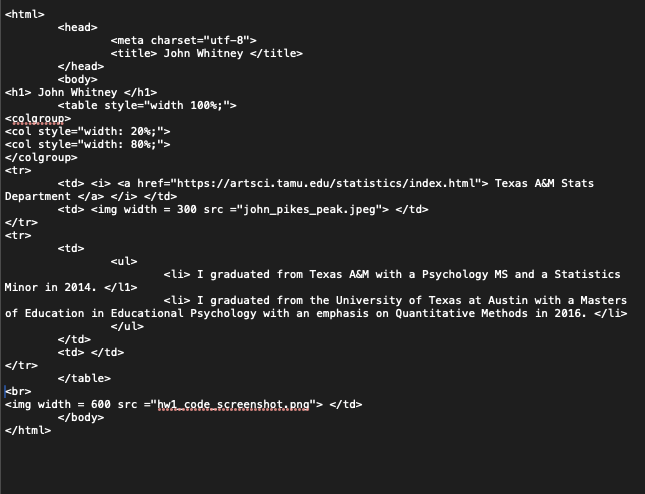

John Whitney
Texas A&M Stats Department
I graduated from Texas A&M with a Psychology MS and a Statistics Minor in 2014.
I graduated from the University of Texas at Austin with a Masters of Education in Educational Psychology with an emphasis on Quantitative Methods in 2016.
